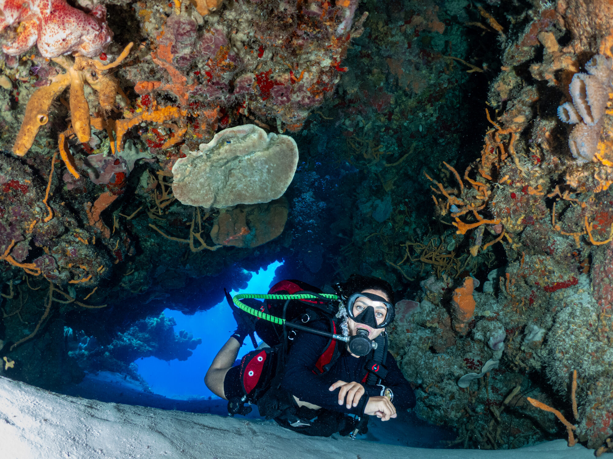
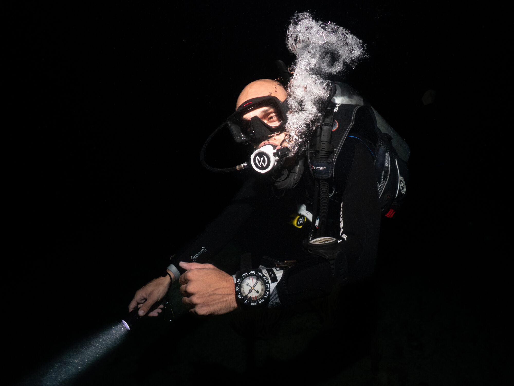
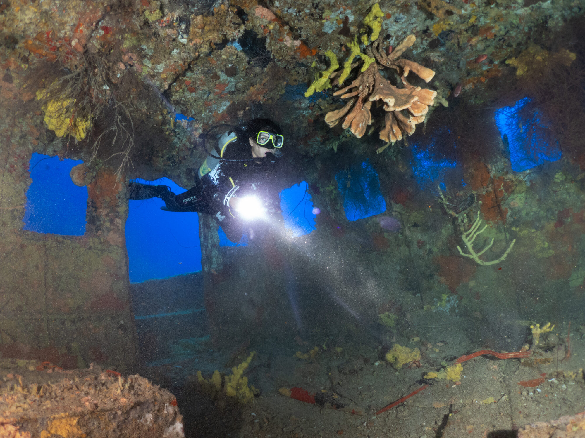

Learn to dive
Learn to dive in Puerto Escondido
Personal, tailored SSI scuba diving courses, taught in English or Spanish by an SSI Scuba Instructor who is also a professional underwater photographer. Private or with friends, from your first breath underwater to certified diver, with photos of your dives.
SSI scuba diving courses
Every course is tailored to you: private or in a group, at your own pace, and every course includes photos of your dives.
Try ScubaDiscover scuba diving
No experience needed
- Your first dive, with me right beside you
- Briefing and skills practice in a swimming pool first
- Then a guided dive in the ocean
- Photos of your dives included
SSI Basic DiverShort on time
Certified in fewer days
- For travellers who want a certification but have only a few days
- Certifies you to dive with a dive professional
- Upgrade to Open Water on your next trip
- Photos of your dives included
SSI Open Water DiverYour diving licence
Recognised worldwide
- Start the theory online in the MySSI app before you arrive
- Skills training in a swimming pool, then four ocean training dives
- Certifies you to dive to 18 m with a buddy, anywhere in the world
- Photos of your dives included
SSI Advanced AdventurerYour next step
For Open Water divers
- Five adventure dives, each a taste of a different specialty
- Choose your adventures, such as deep, navigation or perfect buoyancy
- More experience and confidence underwater
- Photos of your dives included
Already certified? Book a guided photo dive: I guide the dive and photograph you, your buddy and the marine life, so you go home with professional shots. Ask on WhatsApp →
Want to photograph your dives? Learn underwater photography with the SSI Photo & Video course or a snorkel photography class. See photography classes →
How it works
-
Message me
Send your dates on WhatsApp and tell me what you’d like to do. I’ll reply with times and prices.
-
Get ready
For certification courses you start the theory online. Before any dive you fill in a short medical questionnaire.
-
Dive
Private or in a group, at your pace, with your instructor taking the photos. Your edited photos follow after the course.
Questions about diving in Puerto Escondido
Can I book a private course?
Yes. Every course can be private, or with your own group of friends or family, and I tailor the pace and schedule to you.
Do I need to be a strong swimmer?
For Try Scuba you just need to be comfortable in the water. The Open Water course includes a short swim and a float test.
Is there a minimum age?
SSI certification courses start at age 10. Message me about younger children.
Can I dive with a medical condition?
Before diving you answer a standard diver medical questionnaire. Some conditions need a doctor’s sign-off first, so check before you travel.
When is the best time to dive in Puerto Escondido?
November to April usually brings the calmest seas and the clearest water, and humpback whales pass by in the winter months.
Are the photos really included?
Yes. Every dive course includes photos of your dives, taken by me while we dive.
Which languages do you teach in?
English and Spanish.
From my dives



Questions about courses, gear or dates? Message me on WhatsApp or see my underwater work.